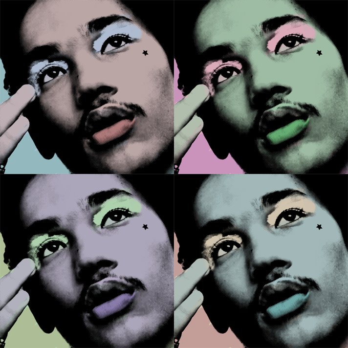

Using Adobe Express, I utilized their flyer layout to give my images a symmetrical and cohesive vision. I embody light feminine academia, the academia represented by the symmetrical structure of the photos. In addition to it being my favorite color, my use of pink symbolized hyperfemininity, a traditionally demonized style. The bright pink, flowers, detailed architecture, and hairbows are all representations of traditional femininity, which is the aesthetic I resonate most with. Women are taught to reject hyperfemininity with age, due to the media portraying it not only as a symbol of low intelligence, but also as high maintenance and self absorbed, both being undesirable traits in the eyes of men. It is because of this portrayal that I am attracted to this aesthetic, which inspired my collage. Libraries and books would typically contrast this aesthetic, but my use of them in relation to beauty and femininity changes what it means to be hyperfeminine.
In creating my 8 bit design, I decided to use my likeness as the character is inspired by me. I gave my character long brown curly hair, but with pink highlights. She is supposed to have a renegade, fighter, rebel look that defies gender norms, as she is also a princess. My character is wearing a purple ball gown and tiara, juxtaposed with her pink highlights and pink sword. The princess’s purpose is to save the villagers of her kingdom as a lucrative knight, a royal by day, hero by night.
Using Adobe Photoshop, I created this pastel mandela, not particularly representational, more abstract and up to interpretation. I used the transform tool to repeatedly copy, rotate, slightly, and then merge my layers until it created a spiral. I used a simple flower to begin, copied it in a circle 8 times to act as a base before I continued to merge them. I used pastel pink, lavender, baby blue, and mint green to give off of a spring aesthetic to complement the flowers. After I created the duplication process 5 times, I noticed that after I scaled down my flowers, I could line them up to cascade in a spiral as though they were becoming smaller.

For this project, Pop Art Swatches, I decided on model & actor Luka Sabbat. Luka is best known for his role on Grownish, & I chose to use him as my muse for this project because I am inspired by his fashion influence. I used pastels for my collage because I felt his aesthetic was less harsh like primaries, and a bit lighter. His eyeshadow in this original photo was a baby blue, so I decided to go along with that theme. If I could do this project again, I’d experiment with neons, to create a bolder look.
The social justice movement I chose for the Activism Composite Collage is Free Palestine. Free Palestine is a movement derived from the 80 year ethnic cleansing and war being fought over rightfully Palestinian territory. Palestinians are being bombed, murdered, tortured, and worse by the Israeli government, in an attempt to run them out of the country. Palestinians are victims of one of the worst humanitarian crises, yet get too little recognition, so I decided to highlight the victims in my artwork by using red slashes over the eyes of the military. The slashes symbolize erasure of their identity and the blood over their eyes from the people they’ve killed. In addition, I added a tile effect, similar to the wall built on the West Bank, exiling Palestinians from their land. I added images of the violence and destruction, but also images of protests around the world, symbolizing the hope to free Palestine.
.jpg)

.png)
.jpg) The social justice movement I chose for the Activism Composite Collage is Free Palestine. Free Palestine is a movement derived from the 80 year ethnic cleansing and war being fought over rightfully Palestinian territory. Palestinians are being bombed, murdered, tortured, and worse by the Israeli government, in an attempt to run them out of the country. Palestinians are victims of one of the worst humanitarian crises, yet get too little recognition, so I decided to highlight the victims in my artwork by using red slashes over the eyes of the military. The slashes symbolize erasure of their identity and the blood over their eyes from the people they’ve killed. In addition, I added a tile effect, similar to the wall built on the West Bank, exiling Palestinians from their land. I added images of the violence and destruction, but also images of protests around the world, symbolizing the hope to free Palestine.
The social justice movement I chose for the Activism Composite Collage is Free Palestine. Free Palestine is a movement derived from the 80 year ethnic cleansing and war being fought over rightfully Palestinian territory. Palestinians are being bombed, murdered, tortured, and worse by the Israeli government, in an attempt to run them out of the country. Palestinians are victims of one of the worst humanitarian crises, yet get too little recognition, so I decided to highlight the victims in my artwork by using red slashes over the eyes of the military. The slashes symbolize erasure of their identity and the blood over their eyes from the people they’ve killed. In addition, I added a tile effect, similar to the wall built on the West Bank, exiling Palestinians from their land. I added images of the violence and destruction, but also images of protests around the world, symbolizing the hope to free Palestine.